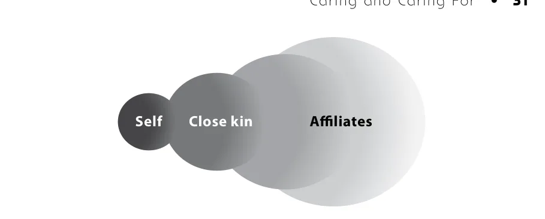

Chương 3 — Yêu thương và chăm sóc
3. Quan tâm và Chăm sóc
Điều gì đang diễn ra trong não bộ khiến một loài vật biết quan tâm đến những cá thể khác, hay biểu lộ các giá trị xã hội? Theo giả thuyết được đưa ra, chính hóa học thần kinh của sự gắn bó và kết đôi ở động vật có vú là yếu tố giải thích cốt lõi.1 Do đó, để hiểu nền tảng dựa trên não bộ cho các giá trị xã hội, trước tiên chúng ta phải xem xét một câu hỏi căn bản hơn, câu hỏi sẽ dẫn chúng ta quay trở lại với các giá trị xã hội: làm thế nào mà bộ não có thể quan tâm đến bất cứ điều gì? Nói cách khác, làm thế nào các tế bào thần kinh có thể coi trọng một điều gì đó? Phần đầu tiên và căn bản nhất của câu chuyện liên quan đến sự tự bảo tồn.2 Mọi hệ thần kinh đều được tổ chức để chăm lo cho sự sống còn cơ bản của cơ thể mà chúng là một phần. Từ góc độ tiến hóa, luận điểm chung rất rõ ràng: sự tự chăm sóc được chọn lọc hơn là sự tự bỏ bê. Những loài vật thất bại trong hành vi tự bảo tồn sẽ không có cơ hội truyền lại gen của mình, trong khi những loài vật thành công trong việc giữ cho cơ thể khỏe mạnh sẽ có cơ hội truyền lại gen của mình. Để một loài vật sống sót, nó phải đi khắp thế giới để tìm kiếm năng lượng, nước và bất cứ thứ gì khác cần thiết để duy trì cơ thể. Đau đớn và sợ hãi là những tín hiệu sinh tồn, báo hiệu nhu cầu cần có hành vi điều chỉnh. Các loại đau đớn khác nhau báo hiệu những hướng điều chỉnh hành vi khác nhau. Những quan sát chung này đặt ra các câu hỏi về cơ chế thần kinh: chẳng hạn, làm thế nào một con chuột biết rằng nó nên đi tìm thức ăn, hoặc chạy nhanh vào hang, hoặc làm tổ? Làm thế nào các tế bào thần kinh đạt được những quyết định hành vi phục vụ cho sự an sinh? Câu trả lời đại khái là các tế bào thần kinh trong thân não và vùng dưới đồi của chuột theo dõi môi trường nội môi của chuột—trạng thái bên trong cơ thể nó so với các thông số quan trọng cho sự sống còn. Khi một nhu cầu cụ thể được phát hiện, một cảm xúc mang tính động lực sẽ được tạo ra. Ở chuột—và ở chúng ta—các tế bào thần kinh thân não và vùng dưới đồi điều hòa thân nhiệt, nồng độ glucose, huyết áp, nhịp tim và nồng độ carbon dioxide. Cân bằng nội môi là quá trình mà môi trường bên trong của sinh vật được điều hòa để duy trì gần với phạm vi cần thiết cho sự sống còn. Và đau đớn, như nhà thần kinh học Bud Craig đã nhận xét, là một cảm xúc cân bằng nội môi.3 Tất cả chúng ta đều quen thuộc với những thay đổi trong môi trường nội môi báo hiệu nhu cầu khắc phục sự mất cân bằng: sự hoảng loạn khi bị cắt đứt oxy, cảm giác khó chịu khi bị lạnh, cảm giác khát, buồn nôn và nỗi đau của cơn đói cồn cào. Những điều này đi kèm với những thôi thúc rõ rệt—tìm kiếm hơi ấm, nước, thức ăn; nôn mửa, bỏ chạy, rúc vào nhau, v.v. Sử dụng các tín hiệu tri giác như mùi và âm thanh, não dưới vỏ của chuột cũng đánh giá rủi ro và cơ hội ở thế giới bên ngoài. Ở chuột, mùi hạt giống kích thích hành vi tiếp cận; ở chuột đực, mùi liên quan đến chuột cái đang động dục kích thích hành vi ve vãn. Một con chuột đực bước vào lãnh thổ mới nơi nó ngửi thấy mùi nước tiểu của một con chuột đực khác sẽ có xu hướng đi nơi khác. Ở chúng ta, nỗi sợ hãi do một con chó gầm gừ gây ra hoặc sự hoảng loạn do khói bất ngờ gây ra là những cảm giác không thể nhầm lẫn và khó chịu. Những cảm giác liên quan đến sự sống còn này được tích hợp, và các chuyển động thích hợp được điều phối, bởi các cấu trúc dưới vỏ ở thân não và vùng dưới đồi, cũng như ở vỏ não thùy đảo và vỏ não đai (hình 3.1). Các cơ chế trong hệ thần kinh giao cảm điều chỉnh cơ thể
![Hình 3.1. Hình này minh họa sơ đồ một số cấu trúc dưới vỏ và kết nối của chúng với vỏ não. Đặc biệt chú ý các con đường phong phú giữa vùng trán và các vùng dưới vỏ, bao gồm những vùng liên quan đến phần thưởng (nhân nằm - accumbens) và sợ hãi (hạch hạnh nhân - amygdala). Vùng dưới đồi kết nối rộng rãi với nhiều cấu trúc, thường theo cách hai chiều. Từ thân não xuất phát bốn hệ thống phóng chiếu thần kinh với các chất hóa học thần kinh riêng biệt, mỗi hệ thống vươn rất rộng vào nhiều vùng. Bốn chất hóa học thần kinh đó, đôi khi được gọi là chất điều biến thần kinh, là serotonin (5HT), noradrenaline (NA), dopamine (DA) và histamine (Hist). Dựa theo Josef Parvizi, “Corticocentric Myopia: Old Bias in New Cognitive Sciences,” Trends in Cognitive Sciences 13, no. 8 (2009):354–59. (Để xem vị trí của hạch hạnh nhân trong không gian 3 chiều, hãy truy cập http://commons.wikimedia.org/wiki/File:Amygdala_small.gif.)](img/fig_3_1.webp)
để “chiến đấu hay bỏ chạy”, và khi mối đe dọa đã qua, các cơ chế khác trong hệ phó giao cảm khôi phục huyết áp và nhịp tim về trạng thái tiêu tốn ít năng lượng hơn là “nghỉ ngơi và tiêu hóa”. Hơn nữa, mạch thần kinh này nhạy cảm với các thứ tự ưu tiên, sao cho nỗi sợ hãi về một kẻ săn mồi đang rình rập lấn át cơn đói đối với hạt ngon hay sự ham muốn đối với con cái đã sẵn sàng.
Tích hợp các tín hiệu từ cả môi trường nội môi và bề mặt cơ thể, mạch thân não–hệ viền là tổ chức nền tảng phục vụ cho sự tự bảo tồn, và cùng với đó là một ý thức tối thiểu về bản thân.4 Việc duy trì sức khỏe và sự an sinh của cơ thể tạo thành giàn giáo sinh học thần kinh cho các cấp độ biểu diễn bản thân cao hơn, chẳng hạn như ý thức về bản thân như một cá nhân thuộc về một nhóm xã hội và có những mối gắn kết đặc biệt với những cá nhân đặc biệt.5
Do đó, theo nghĩa cơ bản nhất, sự quan tâm là một chức năng tầng nền của hệ thần kinh. Bộ não được tổ chức để tìm kiếm sự an sinh, và tìm kiếm sự giải thoát khỏi tình trạng bất ổn. Vì vậy, theo một cách hoàn toàn trực tiếp, mạch thần kinh cho việc tự duy trì và né tránh đau đớn là nguồn gốc của những giá trị cơ bản nhất—những giá trị của việc được sống và của sự an sinh. Đối với ếch, cá hồi và sa giông, kiểu quan tâm này gần như là tất cả những gì chúng có. Dù vậy, mức độ tích hợp này, vốn được bảo tồn cao độ ở tất cả các loài động vật có xương sống, lại phức tạp một cách tinh vi. Áp lực chọn lọc cho sự tự chăm sóc rất rõ ràng, ngay cả khi mạch thần kinh nền tảng bị che khuất bởi sự phức tạp. Làm thế nào có thể giải thích được sự quan tâm đến những cá thể khác? Như đã đề xuất trong chương 2, ý tưởng cốt lõi là ở động vật có vú, những điều chỉnh tiến hóa trong các hệ thống cảm xúc, nội tiết, căng thẳng và phần thưởng/trừng phạt đã mở rộng một cách hiệu quả phạm vi các cá thể mà loài vật quan tâm đến sự an sinh của chúng, ít nhất là đối với một tập hợp các hành vi liên quan đến sự sống còn. Vì vậy, chuột mẹ hành xử như thể những con non mới sinh được bao gồm trong phạm vi cân bằng nội môi cơ bản của nó—chúng phải được cho ăn, làm sạch và giữ ấm, cũng như được bảo vệ khỏi đủ loại nguy hiểm của thế giới, hệt như việc nó phải tự giữ cho mình được ăn no, ấm áp, sạch sẽ và an toàn khỏi những nguy hiểm của thế giới. Khi đàn con bị đe dọa, sự an sinh của chúng trở nên quan trọng đối với chuột mẹ theo cách phần nào giống như sự an sinh của chính nó quan trọng đối với nó, và hành vi điều chỉnh được thực hiện. Đau đớn và sợ hãi, những cảm xúc cân bằng nội môi của chuột mẹ vốn vừa là cảm giác vừa là động lực, được kích hoạt khi sự an sinh của đàn con bị đe dọa. Như thể vòng tròn vàng của “cái tôi” mở rộng ra để bao gồm cả những đứa con nhỏ yếu ớt của tôi (xem hình 3.2).6
Đúng là một con sói hoặc một con chuột thông thường sẽ bỏ rơi đàn con của mình khi mối đe dọa được nhận thức là quá lớn và nó cần tự cứu lấy mình

ngay cả khi đàn con không thể được cứu. Vì vậy, việc mở rộng phạm vi cân bằng nội môi của nó để bao gồm cả đàn con vẫn cho phép nhận ra sự khác biệt giữa bản thân và những cá thể khác được yêu thương sâu sắc. Cha mẹ loài người khi đối mặt với một kẻ thù áp đảo tương tự cũng có thể chọn cách tự cứu lấy mình, mặc dù đôi khi động lực cứu con non có thể dẫn đến sự hy sinh bản thân của cha mẹ. Hành vi của con người trong những hoàn cảnh ngặt nghèo như vậy cũng sẽ phụ thuộc vào nhiều yếu tố khác, bao gồm bản chất của thảm họa, khí chất cá nhân, nền tảng văn hóa xã hội và sự tồn tại của những đứa con khác. Đây là những hệ thống rất mạnh mẽ đan xen nhưng vượt xa hệ thống cực kỳ mạnh mẽ cho sự tự bảo tồn. Sự “vượt xa” này không hề ngẫu nhiên, mà liên quan một cách có hệ thống đến sự an sinh của những cá thể khác, đặc biệt là những người có quan hệ huyết thống.7
Những bước ngoặt quan trọng dẫn từ việc chỉ tự chăm sóc bản thân đến sự đa dạng của các kiểu tính xã hội (quan tâm đến cá thể khác) đặc trưng của động vật có vú, phụ thuộc vào các cơ chế thần kinh và cơ thể giúp “mẫu tính hóa” bộ não của động vật có vú cái, mà đến lượt chúng lại phụ thuộc vào các neuropeptide oxytocin (OXT) và arginine vasopressin (AVP), cùng với các hormone khác. Gần như chắc chắn những cơ chế này ban đầu không được chọn lọc để phục vụ bất kỳ mục đích xã hội rộng lớn hơn nào, mà chỉ đơn thuần để đảm bảo rằng con cái có đủ nguồn lực và động lực để cho bú, bảo vệ, và nói chung là cống hiến bản thân cho sự an sinh của những đứa con non yếu ớt cho đến khi chúng tự lập. Những loài động vật có vú có mạch thần kinh trang bị cho việc chăm sóc con cái sẽ có nhiều con non sống sót hơn so với những loài có xu hướng bỏ bê con cái. Tuy nhiên, một khi đã hình thành, sự biến đổi mang lại sự quan tâm cho những cá thể khác là con cái có thể được biến đổi thêm nữa, có lẽ theo những cách khá nhỏ, để mang lại sự quan tâm cho những cá thể khác không phải là con cái, nhưng sự an sinh của chúng có hệ quả đối với sự an sinh của bản thân và con cái của mình. Tùy thuộc vào loài và áp lực chọn lọc của nó, các sắp xếp xã hội khác nhau sẽ được chọn lọc, và nhiều cơ chế não bộ khác sẽ được đưa vào hoạt động. Chẳng hạn, trong một bầy sói hoặc một đàn hải ly, chỉ có một cặp sinh sản; trong các đàn khỉ đầu chó và đàn cá voi sát thủ, tất cả các con cái có khả năng sinh sản đều sinh sản. Vượn cáo đuôi vòng theo chế độ mẫu hệ; con cái thống trị so với con đực và giao phối với nhiều con đực. Ở rái cá sông và gấu xám Bắc Mỹ, nhóm bao gồm một con cái và đàn con của nó, và con cái giao phối với bất kỳ con đực phù hợp nào ve vãn nó đúng cách. Ở khỉ rhesus, con non chỉ gắn bó với mẹ, trong khi ở khỉ titi, chúng gắn bó với cha mạnh mẽ hơn với mẹ. Đây chỉ là một mẫu nhỏ trong phạm vi các mô hình xã hội được tìm thấy ở động vật có vú, nhưng ẩn sau tất cả chúng có lẽ là những sắp xếp khác nhau của các thụ thể đối với oxytocin và các hormone cũng như chất hóa học thần kinh khác. Các nhà thần kinh học Porges và Carter đặt câu hỏi tại sao OXT và AVP lại phù hợp với vai trò đặc biệt của chúng trong não bộ động vật có vú.8 Để trả lời, họ chỉ ra rằng các peptide này cực kỳ cổ xưa (ít nhất 700 triệu năm, có trước cả động vật có vú), và tham gia vào việc điều hòa nước và khoáng chất trong cơ thể của các loài động vật trên cạn nói chung. Một phiên bản tiến hóa sớm hơn của oxytocin và vasopressin—vasotocin—đóng vai trò trong hành vi giao phối của loài lưỡng cư và rất quan trọng trong việc đẻ trứng. Rất lâu trước khi động vật có vú xuất hiện, vasotocin đã có mặt trong cuộc chơi sinh sản. Ở động vật có vú, việc điều hòa nước và khoáng chất ngày càng trở nên tinh vi hơn, bởi vì trong thời kỳ mang thai, con cái cần phát triển nhau thai, và một túi ối chứa đầy chất lỏng nơi con non phát triển, và sau khi sinh nó cần sản xuất sữa cho con non.9 Điều này cho chúng ta một gợi ý rộng lớn về lý do tại sao OXT và AVP lại dễ dàng được tiến hóa tinh chỉnh trong quá trình sinh sản của động vật có vú, và tại sao các chất tương đồng của các peptide này lại quan trọng trong tính xã hội của loài chim. Như nhà sinh vật học James Hunt đã nhận xét: “Tính xã hội, giống như tính đa bào, đã xuất hiện vô số lần, ở các đơn vị phân loại đa dạng, và đạt đến nhiều mức độ tích hợp khác nhau.”10 Không phải mọi hình thức đều có thể được giả định là có liên quan đến OXT và AVP, và đối với những hình thức có liên quan, cách thức chúng tham gia có thể khác nhau. Ở cấp độ thần kinh, sự gắn bó đạt được như thế nào ở động vật có vú? Để tiến xa hơn với câu hỏi đó, trước tiên chúng ta cần khám phá câu chuyện gắn bó một cách chi tiết hơn.
Giá trị Gia đình: Thuộc về và Muốn Thuộc về
Ở tất cả các loài động vật có vú mang thai, bao gồm cả con người, nhau thai của thai nhi giải phóng nhiều loại hormone vào máu của người mẹ có tác dụng “mẫu tính hóa” bộ não của người mẹ.11 Các hormone này, bao gồm progestin, estrogen và prolactin, tác động chủ yếu lên các tế bào thần kinh ở các cấu trúc dưới vỏ.12 Ví dụ, ở loài gặm nhấm và mèo, điều này khiến con cái mang thai ăn nhiều hơn, chuẩn bị tổ cho lứa đẻ sắp tới và tìm một nơi được cho là an toàn để sinh con. Phụ nữ loài người cũng đáp ứng với một thôi thúc “làm tổ” khi thời điểm sinh nở đến gần, và (như chính tôi có thể chứng thực) bắt đầu dọn dẹp nhà cửa đầy năng lượng và hoàn tất các khâu chuẩn bị cho em bé mới sinh. Quá trình sản xuất OXT được điều hòa tăng cường (tạo ra dồi dào hơn) trong thời kỳ mang thai; khi sinh, việc giải phóng OXT đóng vai trò gây co bóp tử cung. OXT cũng rất cần thiết trong việc tiết sữa khi cho con bú. Trong não, việc giải phóng OXT kích hoạt đầy đủ hành vi làm mẹ, bao gồm sự bận tâm đến trẻ sơ sinh, cho bú, và giữ cho trẻ ấm áp, sạch sẽ và an toàn. Ở người, hành vi làm mẹ cũng có thể được kích hoạt bởi một đứa trẻ mà người phụ nữ nhận nuôi như con đẻ của mình, và sự gắn bó có thể mạnh mẽ chẳng kém gì sự gắn bó với một đứa trẻ do chính mình mang nặng đẻ đau.13 Điều này có khả năng cũng liên quan đến việc giải phóng oxytocin. Những “cô dì” của chồn đất con cũng phản ứng theo cách này. Các loài động vật có vú khác, khi có con riêng của mình, cũng từng được biết đến là nuôi dưỡng con của loài khác, như khi một con chó mãn nguyện cho một con lợn con hoặc một con mèo con bú. Các opiate nội sinh, những phân tử giống thuốc phiện do chính bộ não chúng ta tạo ra, có lẽ cũng đóng một vai trò quan trọng trong sự gắn kết mẫu tử, và con cái đang cho bú nhận được phần thưởng khoái cảm từ các opiate được giải phóng trong quá trình tiết sữa. Theo kinh nghiệm của tôi, tôi sẽ nói rằng việc cho con bú mang lại cảm giác dễ chịu và êm dịu, nhưng nó không khiến bạn “phê” theo bất kỳ nghĩa thông thường nào. Những con khỉ rhesus mẹ bị tiêm naloxone, một hóa chất chẹn các thụ thể đối với opioid và do đó chặn tác dụng của chúng, tỏ ra thờ ơ với con của chúng và có xu hướng bỏ bê chúng. Cừu cái bị tiêm naloxone sẽ chủ động từ chối cừu con của mình. Mặc dù có những yếu tố xã hội phức tạp, những người phụ nữ nghiện heroin có xu hướng bỏ bê hoặc ruồng bỏ con sơ sinh của họ với tỷ lệ cao bất thường. Ở những người nghiện, có lẽ tác dụng khiêm tốn của các opiate nội sinh bị lấn át bởi tác dụng áp đảo của một lượng heroin tương đối lớn,14 mặc dù những bất thường về nồng độ OXT cũng có thể đóng một vai trò. Chẳng hạn, những bà mẹ lạm dụng cocaine có nồng độ OXT thấp hơn so với nhóm đối chứng không nghiện, và biểu hiện ít hành vi làm mẹ hơn.15 Tuy nhiên, thông thường, việc chăm sóc trẻ sơ sinh mang lại phần thưởng; nó tạo cảm giác tốt đẹp. Ngược lại, mức độ lo âu tăng lên khi trẻ khóc, bị mang đi hoặc đau khổ, và điều này tạo cảm giác rất tồi tệ. Điều đó đưa chúng ta đến với nỗi đau, hay rộng hơn là cảm xúc tiêu cực, vốn là một nhân tố trung tâm trong sự xuất hiện của hành vi xã hội ở động vật có vú.16 Nỗi đau, dù có vẻ đủ đơn giản khi trải nghiệm, nhưng lại được hỗ trợ bởi một cấu trúc giải phẫu phức tạp đáng kinh ngạc, với nhiều chuyên biệt hóa, thành phần, chất hóa học thần kinh, con đường và kết nối khác nhau.17 Ngoài những thay đổi liên quan đến oxytocin, hệ thống cảm xúc tiêu cực của động vật có vú—đau đớn, sợ hãi, hoảng loạn, lo âu—cũng đã được biến đổi. Ở tất cả các loài động vật có xương sống, sợ hãi, lo âu và đau đớn thể xác được ghi nhận là các tín hiệu cảnh báo “tự bảo vệ bản thân” trong thân não và vùng dưới đồi. Những thay đổi này dẫn đến một kho tàng hành vi điều chỉnh bởi mạch tự bảo tồn. Những biến đổi tiến hóa đối với các hệ thống cơ bản này đảm bảo rằng động vật có vú phản ứng với mối đe dọa và tổn thương đối với con cái cũng như đối với chính bản thân chúng. Những cảm xúc và phản ứng được huy động cho chiến thuật bảo vệ bản thân cũng được huy động cho chiến thuật bảo vệ con của mình. Một đặc điểm nổi bật của bộ não động vật có vú là vỏ não: một tấm sáu lớp được tổ chức đều đặn tạo thành lớp vỏ ngoài của các bán cầu đại não (xem hình 3.3).18 Phát minh tiến hóa đáng kinh ngạc này nén rất nhiều cấu trúc xử lý vào một không gian chật hẹp, sử dụng khéo léo tổ chức thế giới nhỏ để tối đa hóa sức mạnh xử lý mà không làm mất khả năng tiếp cận; nghĩa là, có những kết nối dày đặc ở cục bộ, những kết nối thưa thớt đến các vùng xa, nhưng nhờ các vùng lân cận được kết nối tốt, bất kỳ vùng nào cũng có thể vươn tới các vùng khác chỉ trong vài bước. Trong câu chuyện của chúng ta, sự biến đổi đặc biệt đáng quan tâm liên quan đến sự trau chuốt ở vỏ não đối với việc biểu diễn nỗi đau, và đặc biệt là nỗi đau xảy ra khi chia lìa hoặc khi những người thân yêu bị đe dọa. Nỗi đau, như nhà thần kinh học A. D. (Bud) Craig ngậm ngùi thừa nhận, là một bí ẩn. Tuy nhiên, những khám phá lớn trong mười lăm năm qua, nhiều khám phá của Craig và các đồng nghiệp của ông, đã sửa chữa một số quan niệm sai lầm cũ kỹ nhưng được tôn sùng, và làm cho nỗi đau với tất cả những điều kỳ lạ của nó bớt bí ẩn đi một chút.19 Bằng cách xếp nỗi đau vào loại cảm xúc cân bằng nội môi, thay vì một cảm giác như áp lực, Craig muốn nhấn mạnh vai trò trung tâm của nó trong tập hợp các cơ chế rộng lớn hơn cho sự tự bảo tồn. Điều này tạo ra sự tương phản với vai trò của thị giác hoặc thính giác, vốn chủ yếu dành cho việc biểu diễn thế giới bên ngoài nhưng không tự động mang lại “cảm giác” thúc đẩy động lực theo cách mà một vết bỏng, chẳng hạn, mang lại. Tất nhiên, sự tương phản này chỉ là vấn đề mức độ, vì xét cho cùng thị giác và thính giác cũng phục vụ cho sự tự bảo tồn—đôi khi chỉ là ít trực tiếp hơn một chút. Cũng giống như cơn khát hoặc cái lạnh, các tín hiệu đau đớn phát ra từ nội tạng, cơ bắp, khớp hoặc bề mặt cơ thể kích hoạt nhu cầu được cảm nhận là cần phải điều chỉnh. Là một phần của các quá trình động lực học nhằm duy trì cân bằng nội môi, khía cạnh cảm giác của nỗi đau có thể thay đổi ngay cả khi kích thích không đổi; chẳng
![Hình 3.3. Hình ảnh bộ não ở mặt cắt vành (một nhát cắt từ tai này sang tai kia). Đường viền màu xám ở bề mặt ngoài là vỏ não (lớp phủ vỏ não). Sự khác biệt về màu sắc giữa chất trắng và chất xám phụ thuộc vào sự hiện diện của myelin, vốn bao gồm các tế bào giàu chất béo quấn quanh sợi trục của tế bào thần kinh, cung cấp một loại lớp cách điện giúp truyền tín hiệu nhanh hơn. Chất xám thiếu myelin. Phần cắt mở mô tả tổ chức phân lớp và kiến trúc cực kỳ đều đặn của vỏ não. Điều chưa thể hiện được là mật độ tế bào thần kinh: có khoảng 100.000 tế bào thần kinh trong một milimét khối mô vỏ não, với khoảng một tỷ kết nối synap giữa các tế bào thần kinh. Phỏng theo A. D. Craig, “Pain Mechanisms: Labeled Lines versus Convergence in Central Processing,” Annual Review of Neuroscience 26 (2003):1–30, và E. G. Jones, “Laminar Distribution of Cortical Efferent Cells,” trong Cellular Components of the Cerebral Cortex, do A. Peters và E. G. Jones biên tập (New York: Plenum, 1984), tập 1, tr. 521–53.](img/fig_3_3.webp)
hạn, những người lính bị bắn giữa lúc giao tranh ác liệt có thể không cảm thấy đau cho đến khi về đến bệnh viện dã chiến an toàn, cũng giống như họ có thể không cảm thấy khát hay đói. Như thể hiện trong hình 3.4, hệ thống đau trung ương ở người phát sinh từ một vùng của tủy sống gọi là lớp I (lamina I), nơi các tín hiệu về tổn thương (cảm nhận đau - nociception) được tiếp nhận từ các mô và cơ quan trong cơ thể. Con đường này dẫn truyền các tín hiệu đó lên tủy sống, vào thân não, nơi có sự giao tiếp chéo với các vùng điều hòa phản ứng cân bằng nội môi, và sau đó tiến tới các vùng cụ thể của đồi thị. Hệ thống này, được gọi là bó gai–đồi thị, cho phép định vị rất chính xác các tín hiệu đau, và tạo ra các loại cảm giác đau khác nhau—một cơn đau nhói so với cảm giác bỏng rát hay nỗi buồn mất mát. Ở vỏ não, hai vị trí đóng vai trò quan trọng trong việc xử lý nỗi đau: vỏ não thùy đảo (nằm khuất dưới thùy trán và rất dễ bị bỏ sót) dường như thiết yếu cho sự khó chịu của các trải nghiệm đau đớn—những khía cạnh tiêu cực về mặt chất lượng—trong khi vỏ não đai trước (ACC), nơi kết nối với nó, chi phối khía cạnh thúc đẩy động lực (hãy làm gì đó) của nỗi đau. Vỏ não thùy đảo, được thể hiện trong hình 3.5, tích hợp tuần tự các tín hiệu cơ thể để đưa ra một báo cáo đầy đủ về trạng thái cơ thể của tôi. Tín hiệu đầu tiên đến phần sau của thùy đảo, và sau đó dường như được xử lý lại qua một loạt các giai đoạn từ sau ra trước của thùy đảo, có lẽ tăng dần về độ phức tạp và sự tích hợp của những gì được biểu diễn. Thùy đảo dường như biểu diễn trạng thái của tôi và trạng thái của những người thân thuộc với tôi, khi nó tích hợp các tín hiệu từ khắp cơ thể và não bộ. Khi một điều gì đó được ghi nhận là bất ổn, chẳng hạn như cái lạnh đang ập đến hoặc một cuộc tấn công sắp xảy ra, nó phản ứng bằng các tín hiệu đau khổ, thúc đẩy việc khắc phục. Phù hợp với giải phẫu thần kinh, những bệnh nhân mắc chứng sa sút trí tuệ trán–thái dương, liên quan đến sự phá hủy các tế bào thần kinh ở thùy đảo, biểu hiện sự mất mát rõ rệt các phản ứng đồng cảm cũng như sự suy giảm cảm giác đau được trải nghiệm. Vùng ở đỉnh cao của hệ thống phân cấp xử lý—thùy đảo trước—dường như là duy nhất đối với loài linh trưởng, và phát triển cao hơn ở người so với các loài linh trưởng khác.
20 Ý nghĩa của những khác biệt này xét về mặt khác biệt năng lực vẫn chưa được xác lập, nhưng chúng có thể liên quan đến độ phức tạp trong việc biểu diễn trạng thái của tôi và trạng thái của những người thân thuộc với tôi,
![Hình 3.4. Bản vẽ mô tả con đường dẫn truyền đau chủ đạo trong não và tủy sống người khi nhìn ở mặt cắt vành. Vỏ não và các cấu trúc chất xám khác (chủ yếu là thân tế bào thần kinh) được hiển thị bằng màu xám đậm hơn; chất trắng (chủ yếu là sợi trục có bao myelin của tế bào thần kinh) được mô tả bằng màu xám nhạt hơn. Lưu ý rằng bó gai–đồi thị bên tạo kết nối ở thân não với vùng điều hòa cân bằng nội môi, và sau đó tiếp tục tạo kết nối synap ở hai nhân riêng biệt (các vùng chất xám) trong đồi thị. Một nhân đồi thị phóng chiếu đến thùy đảo trước (vỏ não cảm nhận nội tại), chứa biểu diễn trạng thái sinh lý của cơ thể, và đến vỏ não cảm giác thân thể (vùng 3a); nhân kia gửi tế bào thần kinh đến ACC (vỏ não đai trước). Nguồn: A. D. Craig, “Pain Mechanisms: Labeled Lines versus Convergence in Central Processing,” Annual Review of Neuroscience 26 (2003):1–30. Tái bản với sự cho phép.](img/fig_3_4.webp)
![Hình 3.5. Một bức ảnh giải phẫu cho thấy thùy đảo ở bán cầu não trái. Thùy đảo đã được bộc lộ bằng cách phẫu tích bỏ đi các phần của thùy trán, thùy thái dương và thùy đỉnh. Thùy đảo cũng có thể được bộc lộ mà không cần phẫu tích bằng cách nhấc thùy trán ra khỏi thùy thái dương. (Hồi não [gyrus] là một gò cao; rãnh não [sulcus] là một khe trũng; địa hình này là kết quả của sự gấp nếp khi bộ não đang phát triển bị giới hạn trong ranh giới của hộp sọ. Các mốc giải phẫu này tương đồng một cách đại khái, nhưng chỉ đại khái thôi, giữa các cá thể) a,m,p: hồi trước, hồi giữa và hồi sau của thùy đảo trước; A, P: hồi trước và hồi sau của thùy đảo sau; APS: rãnh quanh thùy đảo trước; SPS: rãnh quanh thùy đảo trên; IPS: rãnh quanh thùy đảo dưới; H: hồi Heschl. Tái bản với sự cho phép từ Thomas P. Naidich và cộng sự, “The Insula: Anatomic Study and MR Imaging Display at 1.5 T,” American Journal of Neuroradiology 25 (2004):226.](img/fig_3_5.webp)
có lẽ cho phép nỗi buồn kéo dài trước một mất mát, hoặc cho phép những biểu diễn trừu tượng hơn về các trạng thái tương lai có thể xảy ra của tôi và những người thân thuộc với tôi.21
Vì con người có bộ não xã hội, hệ thống đau được tổng quát hóa hơn của chúng ta khiến chúng ta cảm thấy tồi tệ không chỉ khi sự an sinh của chính mình bị đe dọa, mà còn khi sự an sinh của những người thân yêu bị đe dọa. Động vật có vú sơ sinh sẽ hoảng sợ khi bị tách khỏi những cá thể mà chúng gắn bó, và phát ra tiếng kêu cầu cứu. Đây là một điều tốt, vì chúng không thể tự kiếm ăn và tự vệ, và cần có mẹ hoặc cha.22 Cũng vậy, các bà mẹ động vật có vú, và ở một số loài là cả các ông bố, cảm thấy lo âu và tồi tệ khi nghe con cái của chúng phát ra tiếng kêu cầu cứu—cũng là một điều tốt, và vì lý do tương ứng: con của chúng cần chúng. Cả thùy đảo và ACC đều phản ứng với nỗi đau thể xác, nhưng chúng cũng phản ứng với nỗi đau xã hội được kích hoạt bởi sự chia lìa, bị gạt ra ngoài lề hoặc bị phản đối, và với nỗi đau do sai lầm và dự đoán sai gây ra.23
Khi một bà mẹ động vật có vú thành công trong việc làm cho con non an toàn và mãn nguyện, các opiate nội sinh cũng như OXT được giải phóng, cả trong não của đứa con đang mãn nguyện lẫn trong não của người mẹ đang nhẹ nhõm. Ở bên nhau mang lại cảm giác tốt đẹp. Con người biết cảm giác này như thế nào ngay cả khi chúng ta không biết gì về oxytocin hay các opiate nội sinh. Cảm giác hối hận, tội lỗi và xấu hổ là điều điển hình ở hầu hết, nhưng không phải tất cả, con người sau khi làm tổn thương người khác. Những kẻ thái nhân cách (psychopath), mặc dù biết tầm quan trọng xã hội của việc bày tỏ sự hối hận trong phòng xử án, nhưng thực sự không cảm thấy chút nào, ngay cả sau khi gây ra kinh hoàng, tàn sát và cái chết. Những kẻ thái nhân cách là những người có thể xảo quyệt và quyến rũ trong thế giới xã hội nhưng lại không có lương tâm, và có xu hướng không hình thành những sự gắn bó bền chặt.24 Các nghiên cứu về những kẻ thái nhân cách (các thuật ngữ thái nhân cách [psychopath] và nhân cách chống đối xã hội [sociopath] thường được dùng thay thế cho nhau) đã cho phép tổng hợp các tiêu chí khá chính xác để chẩn đoán.25 Những cá nhân được chẩn đoán là thái nhân cách thường có sáu trọng tội trở lên trong hồ sơ tiền án, ít có khả năng hình thành các mối quan hệ lâu dài, hay thao túng và lừa dối, và có xu hướng không có cảm xúc sâu sắc, dù tích cực hay tiêu cực, về hầu hết mọi thứ. Ted Bundy, kẻ đã thú nhận ba mươi vụ giết người từ năm 1974 đến 1978, và thực hiện tra tấn cũng như ái tử thi, là một kẻ thái nhân cách điển hình; hoàn toàn không có sự hối hận hay tội lỗi trước hành động của mình, nhưng theo mọi lời kể lại rất hấp dẫn và quyến rũ. Ngược lại, Charles Manson, một thủ lĩnh giáo phái bị kết án âm mưu thực hiện các vụ giết người Tate và LaBianca ở Los Angeles năm 1969, rõ ràng là bị hoang tưởng, tưởng tượng rằng mình đang lãnh đạo một cuộc cách mạng vì lợi ích của nhân dân. Bộ não của những kẻ thái nhân cách có khác biệt không? Có vẻ là vậy. Dữ liệu hiện có cho thấy những khác biệt quan trọng giữa bộ não của những kẻ thái nhân cách và bộ não của những người đối chứng khỏe mạnh ở những vùng điều hòa cảm xúc, xung động và phản ứng xã hội. Cụ thể, các vùng cận viền (paralimbic) của não bộ ở những kẻ thái nhân cách khác biệt cả về mặt giải phẫu (kích thước nhỏ hơn) lẫn chức năng (mức độ hoạt động thấp hơn trong các nhiệm vụ học tập cảm xúc và ra quyết định).26 Các vùng cận viền bao gồm những vùng mà người ta kỳ vọng sẽ có liên quan: các cấu trúc dưới vỏ điều hòa

các phản ứng cảm xúc, chẳng hạn như hạch hạnh nhân và vách ngăn (septum), các cấu trúc liên quan đến trí nhớ (các vùng hải mã); và các vùng vỏ não được biết là tham gia vào các tương tác xã hội, bao gồm cảm nhận nỗi đau và khoái cảm xã hội (thùy đảo, ACC, vỏ não trán ổ mắt và thùy thái dương bên; xem hình 3.6).27
Các nghiên cứu về cặp song sinh và gia đình cho thấy khả năng di truyền của chứng thái nhân cách nằm trong khoảng 70%; các điều kiện thời thơ ấu như bị lạm dụng và bỏ bê có thể góp phần vào những người có khuynh hướng di truyền sẵn.28 Bởi vì một tỷ lệ đáng kể dân số trong tù—có lẽ khoảng 30–40%—đạt điểm cao theo các tiêu chí thái nhân cách, và bởi vì những kẻ thái nhân cách có thể vừa lừa dối vừa hủy hoại, đây là một rối loạn xã hội gây quan ngại lớn. Chứng thái nhân cách cũng nhắc nhở chúng ta về tầm quan trọng của cảm xúc tiêu cực trong giao tiếp xã hội—vai trò thiết yếu của nó trong việc học hành vi xã hội phù hợp, trong việc kìm hãm các hành động chống đối xã hội và trong việc phát triển lương tâm. Nếu bạn không cảm thấy nỗi đau xã hội nào, thì một hành vi tàn phá hủy hoại cuộc đời người khác cũng có ý nghĩa tương đương như một trò đùa vô tư.29
Bởi vì bộ não con người có vùng trán trước và hệ viền lớn, chúng ta không cần phải phản ứng một cách cứng nhắc trước những điều tồi tệ.30 Chúng ta có thể cân nhắc các lựa chọn cho phép tránh nỗi đau trong tương lai, hoặc chúng ta có thể chịu đựng nỗi đau trước mắt để đổi lấy lợi ích lâu dài hơn. Chúng ta có thể đánh giá các kế hoạch dài hạn và những hệ quả có thể xảy ra của chúng. Làm thế nào đạt được điều này là một chủ đề đang được nghiên cứu, nhưng vẫn chưa được hiểu rõ.31 Điều chúng ta biết là việc trì hoãn sự thỏa mãn thường liên quan đến ý thức và sự tham gia của trí tưởng tượng khi các hệ quả tương lai được xem xét, nhưng cũng có thể được trung gian bởi những thói quen đã hình thành từ lâu, được khắc sâu bởi hệ thống phần thưởng.32 Tuy nhiên, sự đánh giá như vậy không nên được hiểu là “thuần túy nhận thức”, theo nghĩa không bị ảnh hưởng bởi cảm xúc, như việc tính tổng của 29 và 57 chẳng hạn. Trên thực tế, việc đánh giá các sự kiện tương lai được hình dung, một quá trình thỏa mãn các ràng buộc, được định hình bởi các tín hiệu từ mạch định giá vốn là cốt lõi của sự tồn tại, sự an sinh và tính xã hội. Lý trí “lạnh lùng” không hề thiếu vắng cảm xúc. Đúng hơn, nó được cân bằng bởi các cảm xúc–thái độ như sự thận trọng, cảnh giác và dè chừng. Có một sự biến đổi tiến hóa khác nữa đối với bộ não động vật có vú, liên quan đến dây thần kinh phế vị (vagus nerve) và thân não (hình 3.7). Dây thần kinh phế vị giống như một đường ống dẫn các tín hiệu chi tiết đi và đến từ mọi khía cạnh của cơ thể—nội tạng, cơ bắp, xương và da. Ở động vật có vú, một nhánh mới của dây thần kinh phế vị đã phát triển giúp biến đổi một cách sâu sắc một phản ứng hành vi chuyên biệt trước nguy hiểm—cụ thể là phản ứng đông cứng (freezing). Đông cứng có thể làm rối trí kẻ săn mồi, vốn có khả năng dựa vào chuyển động để biết chính xác con mồi đang ở đâu. Chẳng hạn, một con thằn lằn có thể đông cứng khi giật mình. Nhà thần kinh học Stephen Porges33 cho rằng sự biến đổi ở động vật có vú đối với mạch đông cứng cho phép một hành vi mới vẫn giữ được sự bất động nhưng loại bỏ nỗi sợ hãi, do đó cho phép bất động mà không sợ hãi. Tại sao điều đó lại quan trọng? Bởi vì các bà mẹ động vật có vú cần phải bất động mà không sợ hãi, trong khi vẫn duy trì sự cảnh giác. Từ góc độ của loài bò sát, đây là một sự kết hợp trạng thái kỳ lạ, nhưng để cho con bú hàng giờ liền mỗi ngày, một bà mẹ động vật có vú cần phải nằm khá

yên để đàn con có thể bú nguồn thức ăn duy nhất của chúng. Cơ thể của con mẹ không được rơi vào chế độ tắt nguồn, mà phải sẵn sàng phản ứng với các mối đe dọa và kẻ xâm nhập. Khi các bà mẹ động vật có vú nằm yên, cơ thể và bộ não không được phản ứng như thể đang đông cứng vì sợ hãi, bởi vì đông cứng vì sợ hãi sẽ huy động hệ giao cảm, làm giảm tác dụng của oxytocin, và do đó làm gián đoạn dòng sữa. Thay vào đó, người mẹ đang cho con bú phải nằm yên, trong khi vẫn bình tĩnh và thư giãn, và sẵn sàng nếu nguy hiểm phát sinh. Con cái động vật có vú cũng cần phải hơi bất động khi giao phối (hãy nghĩ đến những con bò cái tơ về cơ bản đứng bất động trong khi bò đực hăng hái phóng tinh), và khi sinh nở (nơi việc chạy nhảy lung tung sẽ gây nguy hiểm cho cả mẹ và con). Vì vậy, dây thần kinh phế vị, vốn thường được dạy chỉ như một dây thần kinh sọ cũ kỹ nhàm chán cần học thuộc lòng cho bài kiểm tra giải phẫu, thực chất ở động vật có vú lại là một phần rất đặc biệt trong bản chất xã hội của chúng ta. Đối với chuột cống, chuột nhắt và nhiều loài động vật có vú khác có vỏ não trước trán (PFC) nhỏ so với kích thước cơ thể, thân não và các cấu trúc dưới vỏ khác là những nhân tố chính trong việc tích hợp tín hiệu và đưa ra quyết định, chẳng hạn như nên chạy trốn ngay bây giờ và kiếm ăn sau, nên chiến đấu tiếp hay thử lại vào ngày khác, nên chịu đau để bảo vệ con non trước kẻ săn mồi hay không. Ở các loài linh trưởng, như khỉ, tinh tinh và con người, vỏ não trước trán lớn hơn đồng nghĩa với việc các cấu trúc dưới vỏ có tham gia nhưng thường không chi phối việc ra quyết định, mặc dù trong cơn hoảng loạn, chúng có thể làm vậy.34 Do đó, ở linh trưởng có một mối liên hệ linh hoạt hơn và phức tạp hơn giữa các kích thích và hành vi. Barry Keverne đã mô tả sự lỏng lẻo này như một kiểu giải phóng khỏi các mẫu hành động cố định thường thấy ở các loài động vật có vú não nhỏ.35
Chuyến thám hiểm vào bụi gai rậm rạp của nỗi đau, nỗi sợ, khoái cảm và hệ thống phần thưởng còn mang lại một thành quả nữa. Dự đoán, như nhà thần kinh học Rodolfo Llinás chỉ ra, là chức năng tối hậu và phổ biến nhất của não bộ.36 Đó là bởi vì trong việc định hướng hành vi, các hoạt động dự đoán phục vụ cho sự sống còn và an sinh. Dự đoán càng tốt, cá thể càng có nhiều khả năng sống sót trước kẻ săn mồi, tìm được thức ăn ngon và tránh được hiểm họa. Giống như phép màu của lãi suất kép, năng lực dự đoán trở nên mạnh mẽ và trừu tượng hơn theo cấp số nhân với sự mở rộng của các mạng lưới thần kinh giữa đầu vào cảm giác và đầu ra vận động. Những loài động vật có vú sơ khai có thể sử dụng vỏ não mới của chúng để lường trước hiệu quả hơn khi nào một hoàn cảnh có thể kết thúc trong rắc rối. Những loài động vật có vú não lớn thậm chí còn khéo léo hơn trong các dự đoán và hành vi của chúng.37 Đối với động vật có vú sống theo bầy đàn, việc lường trước những gì cá thể khác sẽ làm là vô cùng giá trị: liệu cá thể kia sẽ chia sẻ, cắn, đánh, giao phối, hay làm gì? Những dự đoán về rắc rối xã hội thường mang theo giá trị cảm xúc, và thúc đẩy hành động phòng ngừa dưới một hình thức nào đó phù hợp với hoàn cảnh. Hơn nữa, con non học cách lường trước hành vi của mẹ và của các anh chị em cùng lứa, dần dự đoán được điều gì có khả năng xảy ra sau một số cử động chuẩn bị nhất định—chơi đùa, làm đau, v.v. Điều này, theo gợi ý của Don Tucker và các đồng nghiệp, đánh dấu sự khởi đầu khiêm tốn của biểu diễn nội tại về mục tiêu của các cá thể khác,38 một biểu diễn trừu tượng hơn so với dự đoán về chuyển động, nhưng phụ thuộc vào các liên kết học được do các tế bào thần kinh vỏ não mới làm trung gian.39 Chỉ gần đây các thí nghiệm hành vi động vật mới hướng tới việc khám phá xem liệu động vật không phải người có mô hình tâm trí về mục tiêu và quan điểm của cá thể khác hay không, và một số kết quả thật đáng ngạc nhiên. Một con giẻ cùi bụi rậm (scrub jay), như nhà tập tính học Nicola Clayton đã chứng minh, thực sự hiểu những con giẻ cùi khác có thể nhìn thấy gì, và điều chỉnh hành vi cất giấu thức ăn của nó cho phù hợp.40 Nếu một con giẻ cùi có thứ bậc cao có thể nhìn thấy kho hạt giấu của một con giẻ cùi khác, con giẻ cùi giấu hạt sẽ di chuyển nó đi; nhưng nếu con giẻ cùi đang nhìn có thứ bậc thấp thì không. Tinh tinh đã được chứng minh là hoàn toàn có khả năng điều chỉnh hành vi của chúng theo cách tương tự. Hãy xem xét con tinh tinh mẹ lường trước rằng đứa con non của nó sẽ chọc giận con đực đầu đàn nếu nó chộp lấy thức ăn của con đực trưởng thành. Tinh tinh mẹ cảm thấy nỗi đau dự báo khi nhìn thấy ý định của con non, và vội vã lôi nó đi trước khi rắc rối bắt đầu. Ở con người, những công cụ dự đoán khiêm tốn nhưng hữu ích này dẫn đến một lược đồ hoàn chỉnh hơn về trạng thái tâm trí của người khác, cụ thể là “lý thuyết tâm trí” (theory of mind), chứa đầy các biểu diễn trừu tượng như “mục tiêu” và “niềm tin”. (Sinh học thần kinh của “lý thuyết tâm trí” sẽ được thảo luận đầy đủ hơn trong chương 4 và 6.) Sự hiểu biết ngày càng tăng về sinh học thần kinh của sự gắn bó ở động vật có vú phù hợp với quan sát rằng hệ thần kinh được bảo tồn cao độ giữa các loài: các tế bào thần kinh rất giống nhau và hoạt động theo cách rất giống nhau ở người, chuột và sên; bảng màu các chất hóa học thần kinh tác động lên tế bào thần kinh và cơ bắp về cơ bản là giống nhau ở động vật có xương sống và động vật không xương sống; mô hình cơ bản của sự phát triển cơ thể và não bộ cũng tương tự nhau ở động vật có xương sống và động vật không xương sống. Điều đáng kinh ngạc là những biến đổi khiêm tốn trong các cấu trúc thần kinh hiện có—chẳng hạn như sự mở rộng của một vùng thính giác, hoặc sự phóng đại của một vùng biểu diễn xúc giác trên các ngón tay—có thể dẫn đến những kết quả mới, chẳng hạn như khả năng phân biệt các mẫu âm thanh hoặc mẫu xúc giác tốt hơn nhiều.41 Theo hướng này, nhà sinh học thần kinh Jaak Panksepp gợi ý rằng nỗi đau khổ khi bị chia lìa xã hội thấy ở động vật có vú có thể là một sự biến đổi của sở thích nơi chốn cổ xưa hơn—đi kèm với nỗi lo âu ở những nơi xa lạ—thường thấy ở các loài không phải động vật có vú.42 Sự quen thuộc mang lại cảm giác dễ chịu vì nó cho phép khả năng dự đoán cao hơn, và điều đó đồng nghĩa với việc giảm lo âu. Niềm vui khi được ở giữa những cá thể khác trong nhóm khai thác chính mạch thần kinh dành cho cảm giác thoải mái trong các điều kiện an toàn và quen thuộc của trạng thái “nghỉ ngơi và tiêu hóa”. Những thay đổi tiến hóa ở động vật có vú khiến nỗi đau khổ được cảm nhận khi chia lìa khỏi những cá thể mà chúng ta gắn bó có lẽ là những biến đổi khiêm tốn xét từ góc độ mạch não, nhưng chúng lại tạo ra một điều hoàn toàn mới ở cấp độ vĩ mô: mở rộng sự quan tâm sang những cá thể khác. Tiến hóa sinh học không đạt được sự thích nghi bằng cách thiết kế một cơ chế hoàn toàn mới từ con số không, mà biến đổi những gì đã có sẵn, từng chút một. Cảm xúc, giá trị và hành vi xã hội không phải là kết quả của một bản thiết kế kỹ thuật hoàn toàn mới, mà đúng hơn là một sự thích nghi của các sắp xếp và cơ chế hiện có vốn gắn kết mật thiết với mạch tự bảo tồn cho việc chiến đấu, đông cứng và bỏ chạy một mặt, và cho việc nghỉ ngơi và tiêu hóa mặt khác. Chẳng hạn, nỗi đau của sự gạt bỏ, chia lìa và phản đối không đòi hỏi một hệ thống hoàn toàn mới, mà khai thác, mở rộng và biến đổi những gì đã có sẵn cho nỗi đau thể xác và cảm xúc cân bằng nội môi ở các loài tiền động vật có vú. Trong phần tiếp theo, chúng ta sẽ xem xét kỹ hơn cách một số hệ thần kinh của động vật có vú mở rộng sự gắn bó vượt ra ngoài vòng tròn khép kín của con cái.
Gắn bó Bạn đời
Mặc dù đôi khi được cho là một mô hình độc nhất của con người, sự gắn bó bạn đời lâu dài được tìm thấy ở khoảng 3% các loài động vật có vú, bao gồm hải ly, khỉ đuôi sóc (marmoset), khỉ titi, vượn, chuột hươu California, chuột đồng cỏ (prairie vole) và chuột thông (pine vole).43 Tuy nhiên, hầu hết các loài động vật có vú, ngay cả khi chúng sống theo bầy đàn, đều giao phối bừa bãi hoặc theo mùa. Một tỷ lệ cao hơn nhiều các loài chim—khoảng 90%—có sở thích bạn đời mạnh mẽ và gắn kết lâu dài.44 Những họ hàng gần nhất còn sống của chúng ta—tinh tinh và tinh tinh lùn (bonobo)—không phải là những loài kết đôi lâu dài, và điều tương tự cũng đúng với hầu hết các loài gặm nhấm và khỉ. Sự gắn bó bạn đời lâu dài là một hình thức tính xã hội cực kỳ quan trọng: chúng ta yêu người kia, chúng ta muốn giao phối với anh ấy, ở bên cô ấy, thấy cô ấy phát đạt, chăm sóc cho anh ấy. Chúng ta cảm thấy đau khổ khi chia lìa hoặc khi bạn đời của mình bị tổn thương hay bị đe dọa. Khi một người bạn đời qua đời, người ở lại thường bị trầm cảm và đôi khi sa sút sức khỏe.45 Tuy nhiên, sự gắn bó bạn đời không hàm ý sự chung thủy tuyệt đối về tình dục, như các nghiên cứu di truyền ở loài gặm nhấm và con người đã tiết lộ.46 Điều này có thể liên quan phần nào đến sự đa dạng di truyền, và các nghiên cứu về loài chuột chũi thông thường, với cái tên khoa học đầy gợi cảm là Cryptomys hottentotus hottentotus, thực sự gợi ý điều này.47 Nhưng câu hỏi hiện nay là: khi chúng ta thấy sở thích bạn đời mạnh mẽ ở chuột đồng cỏ, chẳng hạn, điều gì trong não bộ giải thích tại sao một con chuột đồng cỏ có xu hướng gắn kết với bạn đời suốt đời, còn một con chuột đồng núi (montane vole) thì không? Chuột đồng (vole) là loài gặm nhấm trông khá giống những con chuột mũm mĩm có đuôi ngắn. Chuột đồng cỏ và chuột đồng núi, dù giống nhau về mặt thể chất, nhưng lại rất khác nhau về tính xã hội: chuột đồng cỏ kết đôi suốt đời; chuột đồng núi không biểu lộ sở thích bạn đời. Chuột đồng cỏ đực bảo vệ con cái và tổ khỏi kẻ xâm nhập, và con đực chia sẻ việc nuôi dạy đàn con, liếm láp, tha về tổ và bảo vệ chúng. Ở chuột đồng núi, chỉ có con cái nuôi con, và trong thời gian ngắn hơn so với chuột đồng cỏ. Mức độ hòa đồng chung cũng khác biệt. Khi được thả ngẫu nhiên vào một căn phòng lớn, chuột đồng cỏ có xu hướng tụ tập lại gần gũi nhau khá thân thiện; chuột đồng núi lại bằng lòng sống cô độc. Các cặp đực–cái của chuột đồng cỏ tạo thành nền tảng cho các nhóm gia đình mở rộng, với các anh chị em giúp đỡ chăm sóc những lứa con nhỏ hơn. Điều đó không xảy ra ở chuột đồng núi. Bởi vì chuột đồng núi và chuột đồng cỏ rất giống nhau về cấu trúc đại thể của não bộ, chúng có thể được so sánh ở cấp độ vi cấu trúc để khám phá những khác biệt sinh học thần kinh nào có thể giải thích cho những khác biệt nổi bật về tính xã hội này.
Vào những năm 1970, Sue Carter, một nhà nội tiết học thần kinh tại Đại học Illinois, đang nghiên cứu tác động của hormone lên não bộ và hành vi thì bà quan sát thấy chuột đồng cỏ hình thành sở thích bạn đời mạnh mẽ, và hơn thế nữa, mối gắn kết này hình thành ngay từ lần giao phối đầu tiên. Thắc mắc về hiện tượng nổi bật này, bà nghi ngờ rằng các hormone giới tính—có lẽ là estrogen—nắm giữ chìa khóa để giải thích các mô hình gắn bó khác thường của loài chuột đồng. Dù đó là một phỏng đoán hay, các thí nghiệm của bà không ủng hộ giả thuyết estrogen. Tìm kiếm câu trả lời ở nơi khác, bà suy ngẫm về công trình nội tiết học thần kinh xuất sắc của nhà sinh vật học Barry Keverne trên loài cừu.48 Phòng thí nghiệm của Keverne đã chứng minh rằng việc tiêm neuropeptide oxytocin vào não của một con cừu cái chưa từng sinh sản có thể kích hoạt đầy đủ hành vi làm mẹ, bao gồm cả sự gắn kết cừu mẹ–cừu con. Như bất kỳ người nuôi cừu nào cũng biết rõ, việc khiến một con cừu cái gắn kết với một con cừu con mồ côi là rất khó đạt được, ngay cả đối với những con cừu cái vừa mới sinh một con cừu con chết lưu và lẽ ra đã sẵn sàng chăm sóc một con cừu non. Vì vậy, hiệu ứng này thực sự rất ấn tượng. Nếu sự gắn bó mẹ–con được trung gian bởi oxytocin, liệu sự gắn kết bạn đời có thể là một sự mở rộng của điều đó không? Linh cảm của Carter hóa ra lại cực kỳ hiệu quả, và nó đã khởi phát một loạt các nghiên cứu khổng lồ. Khi tìm hiểu về nghiên cứu này, tôi bắt đầu nghi ngờ rằng đây chính là mắt xích dẫn đến kiểu quan tâm mà chúng ta thường gắn với hành vi đạo đức của con người.49 Điều này, có lẽ, Hume có thể chấp nhận như là mầm mống của “tình cảm đạo đức”.
Các Cơ chế của Sự gắn bó Bạn đời
Như đã đề cập, oxytocin là một peptide rất đơn giản, rất cổ xưa; nó là một chuỗi gồm chín mắt xích axit amin (để đối chiếu, hemoglobin là một chuỗi cực kỳ phức tạp, với hơn năm trăm mắt xích axit amin). OXT có một phân tử anh em, arginine vasopressin (AVP), và chúng dường như đã tiến hóa từ một tổ tiên chung, chỉ khác nhau ở hai axit amin. Giống như OXT, AVP được tìm thấy trong não cũng như trong cơ thể, nơi nó đóng một vai trò quan trọng trong việc duy trì huyết áp và cân bằng nước.
OXT và AVP được giải phóng tự nhiên ở vùng dưới đồi, và khuếch tán khá rộng đến các vùng dưới vỏ khác, chẳng hạn như những vùng liên quan đến phần thưởng (bao gồm nhân nằm), điều hòa hành vi tình dục (vách ngăn - septum), và điều hòa việc làm cha mẹ. OXT dồi dào hơn ở giống cái so với giống đực. AVP được giải phóng từ các vùng dưới vỏ khác, bao gồm hạch hạnh nhân giữa, vách ngăn bên và nhân quanh não thất, và dồi dào hơn ở giống đực so với giống cái. Nồng độ AVP tăng lên khi con đực bước vào tuổi dậy thì, và nó được giải phóng trong quá trình kích thích tình dục, giảm xuống ngay trước khi xuất tinh. Ở chuột cống đực, OXT thúc đẩy chức năng cương dương, đạt đỉnh khi cực khoái, và giảm về mức cơ bản khoảng ba mươi phút sau khi cực khoái.50 Yếu tố giải phóng corticotrophin (CRF) cũng là một nhân tố cực kỳ quan trọng trong đời sống xã hội của động vật có vú. Nó gắn liền với căng thẳng, và do đó gắn với lo âu và những khó chịu của nó. Khi động vật cảm thấy an toàn và thoải mái, nồng độ OXT của chúng tăng lên và nồng độ CRF giảm xuống từ mức “chiến đấu hay bỏ chạy”. Tương ứng, sự lo âu giảm xuống. Tuy nhiên, đáng chú ý là mức độ CRF vừa phải lại làm tăng sự gắn kết ở chuột đồng cỏ đực.51
Để phát huy tác dụng, OXT và AVP gắn vào các protein thụ thể cụ thể trên bề mặt tế bào thần kinh, và do đó vai trò của OXT trong hành vi phụ thuộc vào độ dồi dào tương đối của nó, nhưng cũng phụ thuộc vào mật độ thụ thể trên các tế bào thần kinh ở một vùng não cụ thể. Ví dụ, những con chuột cái có mức độ liếm láp và chải chuốt con non cao hơn có mật độ thụ thể OXT lớn hơn các con cái khác. OXT chỉ có một loại thụ thể, nhưng AVP có hai thụ thể khác nhau trong hệ thần kinh. Việc gắn vào một thụ thể đóng vai trò trong sự gắn kết bạn đời và hành vi làm cha mẹ, trong khi việc gắn vào thụ thể kia lại liên quan đến sự lo âu và hung hăng, thường là trong việc bảo vệ bạn đời.52
Trong các nghiên cứu cho đến nay, sự tương phản sinh học thần kinh chính giữa chuột đồng núi đực và chuột đồng cỏ đực là loài sau có mật độ thụ thể đối với AVP và OXT cao hơn nhiều ở hai vùng dưới vỏ rất cụ thể của não: nhân nhạt bụng (ventral pallidum) và nhân nằm (nucleus accumbens) (cả hai đều là một phần của hệ thống phần thưởng và trừng phạt; xem hình 3.8).53 Mặc dù tất cả các loài động vật có vú đều có cả OXT và AVP trong hệ thần kinh trung ương và tất cả đều có thụ thể cho cả hai, các thí nghiệm đã chỉ ra rằng chính mật độ thụ thể ở hai vùng cụ thể và kết nối chặt chẽ với nhau này đánh dấu một sự khác biệt then chốt trong hành vi xã hội. Nếu các thụ thể bị chẹn bằng thực nghiệm để OXT hoặc AVP không thể gắn vào, thì những con chuột đồng được xử lý sẽ không gắn kết sau lần giao phối đầu tiên, và không biểu hiện hành vi xã hội đặc trưng của chuột đồng cỏ. Với bản chất của sinh học thần kinh, chúng ta không nên ngạc nhiên nếu các yếu tố khác, chẳng hạn như các biến thể trong mạch thần kinh và nồng độ của các hormone khác, đóng một vai trò quan trọng trong việc liệu các cá thể trong một loài có thường hình thành các mối gắn kết lâu dài hay không. Do đó, những sự thật về mật độ thụ thể cao tương quan với sự gắn kết lâu dài tốt nhất nên được coi là điểm khởi đầu của câu chuyện, chứ không phải điểm kết thúc. Chính xác thì tác động lên tế bào thần kinh là gì khi hai peptide này, OXT và AVP, gắn vào các thụ thể tương ứng của chúng? Việc điều tra những chi tiết này đang được tiến hành; câu trả lời hoàn chỉnh vẫn chưa được biết. Hơn nữa, câu trả lời chắc chắn sẽ rất phức tạp, ngay cả ở chuột đồng, vì các tế bào thần kinh bị ảnh hưởng là một phần của một hệ thống rộng lớn hơn, nghĩa là những gì đang diễn ra ở nơi khác—trong tri giác, trí nhớ, v.v.—sẽ có tác động. Chấp nhận rủi ro đơn giản hóa, chúng ta có thể lưu ý một số đặc tính thực sự nổi bật. OXT được giải phóng trong các tương tác xã hội tích cực, và đã được chứng minh là ức chế các hành vi phòng vệ, chẳng hạn như chiến đấu, bỏ chạy và đông cứng. Nó dường như làm được điều này bằng cách tương tác với trục dưới đồi–tuyến yên–thượng thận để ức chế hoạt động ở hạch hạnh nhân, một cấu trúc cổ xưa về mặt tiến hóa có các chức năng đa dạng bao gồm việc điều hòa các phản ứng sợ hãi. Việc giải phóng OXT cũng có xu hướng điều hòa giảm (làm dịu) các phản ứng tự chủ chiến đấu hay bỏ chạy ở thân não, và nói chung làm giảm khả năng phản ứng của hệ thần kinh đối với các tác nhân gây căng thẳng. Đáng chú ý là tác dụng của nó nhạy cảm với ngữ cảnh. OXT được tiêm cho chuột cống đực làm tăng sự hung hăng đối với kẻ xâm nhập nhưng lại làm giảm sự hung hăng đối với con non. Liệu hồ sơ mật độ thụ thể thấy ở chuột đồng cỏ có mở rộng sang các loài một vợ một chồng khác không? Có vẻ như câu trả lời là có đối với
![Hình 3.8. Bản vẽ não chuột cống, cho thấy mạch chính của hệ thống phần thưởng. Ba cấu trúc dưới vỏ quan trọng là nhân nằm, nhân nhạt bụng và nhân cận cánh tay (parabrachial nucleus). Các cấu trúc vỏ não chính kết nối với các điểm nóng khoái cảm là vỏ não đai trước, vỏ não trán ổ mắt, thùy đảo và vỏ não trán giữa bụng. VTA (vùng trần bụng) chứa các tế bào thần kinh giải phóng dopamine, và các tế bào thần kinh này phóng chiếu vào nhân nhạt bụng, nhân nằm và vỏ não trán ổ mắt, đồng thời rất quan trọng trong việc học tập phần thưởng. Tất cả các cấu trúc và con đường này cũng tồn tại trong bộ não con người. Nguồn: Kent C. Berridge và Morten Kringelbach, “Affective Neuroscience of Pleasure: Reward in Humans and Animals,” Psychopharmacology 199 (2008):457–80. Với sự cho phép.](img/fig_3_8.webp)
khỉ đuôi sóc,54 khỉ titi55 và chuột hươu California (Peromyscus californicus). Ngược lại, các loài giao phối bừa bãi như khỉ rhesus và chuột chân trắng, Peromyscus leucopus, có hồ sơ thụ thể OXT và AVP tương tự như chuột đồng núi (giao phối bừa bãi). Những sự thật tương đương về mật độ thụ thể trong giải phẫu người vẫn chưa được xác định, vì các phương pháp tiêm để đánh dấu thụ thể không thể thực hiện trên người sống, và không hiệu quả khi thực hiện trên não người chết. Tuy nhiên, bởi vì các cơ chế và cấu trúc được bảo tồn cao độ giữa các loài, một phỏng đoán hợp lý là những người hình thành các mối quan hệ ổn định, lâu dài sẽ có mật độ thụ thể giống với chuột đồng cỏ, khỉ đuôi sóc và vượn hơn là giống với chuột đồng núi và tinh tinh. Khi điều tra mối liên hệ gen–não–hành vi ở người, Heike Tost gần đây đã báo cáo rằng một biến thể cụ thể của gen quy định thụ thể OXT (OXTR) tương quan với một số kiểu biến thiên về tính xã hội thấy ở người, bao gồm một số kiểu khiếm khuyết xã hội.56 Alen này (gen OXTR được biết đến là rs53576, alen là rs53576A) tương quan với những khác biệt giải phẫu cụ thể (so với nhóm đối chứng bình thường): giảm kích thước chất xám ở vùng dưới đồi; tăng kết nối giữa vùng dưới đồi và hạch hạnh nhân và giữa vùng dưới đồi và vỏ não đai trước; và chỉ ở nam giới, tăng thể tích chất xám của hạch hạnh nhân.57 Khi kiểm tra xem điều này có tạo ra sự khác biệt nào đối với hoạt động não bộ trong một nhiệm vụ nổi bật về mặt cảm xúc hay không, họ nhận thấy sự sụt giảm mức độ hoạt động của hạch hạnh nhân. Về mặt hành vi, alen này có liên quan đến sự suy giảm tính xã hội (thôi thúc được thuộc về, sự đồng cảm với người khác, việc làm cha mẹ nhạy cảm, năng lực gắn bó lâu dài, v.v.) khi sử dụng các thang đo tự đánh giá đã được thiết lập vững chắc.58 Hiện chưa có kỹ thuật nào để xác định trực tiếp mật độ và sự phân bố thụ thể ở các đối tượng còn sống, do đó sự tập trung hướng vào các cấu trúc thần kinh được biết là nơi lưu giữ OXT (ví dụ: vùng dưới đồi) hoặc được kết nối phong phú với các vùng có thụ thể OXT (chẳng hạn như hạch hạnh nhân). Để giải thích sự biến thiên về khí chất xã hội, Tost và cộng sự gợi ý rằng ở những người mang alen rs53576A, cấu trúc và kết nối không chuẩn giữa vùng dưới đồi, hạch hạnh nhân và vỏ não đai trước có thể thường xuyên tạo ra những cảm xúc ít tích cực hơn hoặc thậm chí tiêu cực về các tương tác xã hội. Những gì một đối tượng đối chứng có thể thấy là một tương tác hơi dễ chịu, chẳng hạn như trò chuyện với một người lạ trong hàng chờ ở cửa hàng tạp hóa hoặc giúp một người hàng xóm nhặt đồ tạp hóa bị rơi, thì những đối tượng này lại thấy khó chịu. Điều này là hợp lý, xét đến những gì đã biết về vai trò quan trọng của hạch hạnh nhân trong các cảm giác sợ hãi và phản ứng sợ hãi, cũng như trong các phản ứng xã hội tích cực.59 Nhiều yếu tố đóng vai trò trong tính xã hội ở người, và như chúng ta sẽ thảo luận trong chương 5, các gen đơn lẻ hiếm khi có tác động lớn, mà là một phần của mạng lưới gen đa nút, và là một phần của mạng lưới gen–não–môi trường với các vòng lặp hồi quy. Theo đó, phát hiện liên quan đến một biến thể đáng kể của gen OXTR, dù quan trọng, có khả năng chỉ là một phần của câu chuyện về tính xã hội của con người và sự biến thiên của nó. Để cảm nhận được những yếu tố khác này, hãy xem xét rằng có một tác động qua các thế hệ của hành vi làm mẹ lên nồng độ OXT của con non, và lên hành vi xã hội sau này của nó. Michael Meany và các đồng nghiệp đã chỉ ra rằng những con chuột mẹ có mức độ hành vi làm mẹ cao cũng có nồng độ OXT cao; những cá thể tiếp nhận hành vi làm mẹ của chúng cũng có nồng độ OXT cao, điều này được chứng minh là có liên quan nhân quả đến việc liếm láp và chải chuốt của chuột mẹ. Khi những con non cái đó trưởng thành và có lứa con riêng, chúng cũng rất giàu bản năng làm mẹ, có nồng độ OXT cao, và con của chúng đến lượt mình lại có nồng độ OXT cao.60 Các thử nghiệm nuôi chéo cho thấy hành vi của cha mẹ trong trải nghiệm đầu đời của con non có ảnh hưởng lớn hơn đến kết quả này so với gen.61 Một kết quả tương tự hiện đã được chứng minh ở khỉ rhesus.62 Ở người, nồng độ OXT cao hơn tương quan với mức độ tương tác làm mẹ cao, điều này đến lượt nó tương quan với nồng độ OXT cao ở trẻ sơ sinh. Như Ruth Feldman và các đồng nghiệp gợi ý, có một vòng phản hồi sinh học giữa OXT, việc làm cha mẹ và năng lực xã hội của trẻ sơ sinh ở các loài không phải người, và điều này có thể cũng đúng ở người.63
Còn Gì Khác Ngoài Oxytocin?
Người ta biết nhiều hơn về vai trò của vasopressin ở giống đực so với giống cái. Ở giống đực, nó thiết yếu cho việc gắn kết với bạn đời, và có lẽ cũng đóng vai trò trong sự hung hăng, đặc biệt là để bảo vệ con non và bạn đời. Tuy nhiên, trong một số điều kiện, AVP có tác dụng trái ngược với OXT. Vì vậy, việc tiêm AVP cho một con chuột đồng đực làm tăng mức độ hoạt động và sự kích thích của nó, và gắn liền nhiều hơn với các tư thế phòng vệ hơn là các tư thế “thân thiện”. Trong khi việc dùng OXT cho giống cái làm giảm khả năng vận động và gây ra sự yên tĩnh, thì AVP dùng cho giống đực dường như có tác dụng ngược lại. Hệ thống OXT và AVP tất nhiên tương tác với các hormone khác như estrogen và progesterone, cả trước khi sinh lẫn sau khi sinh. Chúng cũng tương tác với các chất dẫn truyền thần kinh như dopamine và serotonin,64 và các chi tiết đang được nghiên cứu. (Các chất dẫn truyền thần kinh, vốn có rất nhiều loại, là những chất được tiết ra bởi một tế bào thần kinh, sau đó gắn vào một tế bào thần kinh khác sau khi khuếch tán qua khoảng trống giữa hai tế bào thần kinh, qua đó tạo thành một hình thức giao tiếp giữa các tế bào thần kinh tách biệt về mặt không gian. Chất được giải phóng sẽ làm tăng hoặc giảm xác suất tế bào thần kinh tiếp nhận được kích hoạt.) Ngoài hệ thống OXT và AVP, hệ thống dopamine dường như rất quan trọng đối với việc biểu hiện hành vi xã hội. Dopamine là một chất dẫn truyền thần kinh đóng nhiều vai trò trong nhiều chức năng. Nó có hai loại thụ thể, D1 và D2,65 đặc biệt liên quan đến hành vi xã hội, và mỗi loại có chức năng riêng biệt. Dopamine được biết là có vai trò tối quan trọng trong học tập, và làm trung gian cho những thay đổi tế bào thần kinh trong hệ thống phần thưởng/trừng phạt khi động vật học về thế giới và dần dự đoán được một sự kiện từ sự xuất hiện của một sự kiện khác. Chẳng hạn, để chuột đồng cỏ gắn bó với bạn đời của chúng, chúng cần có khả năng nhận biết mình đã giao phối với con chuột đồng nào, và sự nhận biết đòi hỏi phải học tập, còn học tập đòi hỏi dopamine. Dopamine gần đây đã được xác định là có vai trò trong cả việc kết đôi và hành vi làm cha mẹ. Việc tiếp cận các thụ thể dopamine D2 là cần thiết cho sự hình thành một mối gắn kết cặp đôi, trong khi việc kích hoạt các thụ thể dopamine D1 lại ngăn chặn sự gắn kết cặp đôi. Sau khi mối gắn kết được hình thành, các thụ thể D1 được điều hòa tăng cường, ngăn cản sự hình thành một mối gắn kết thứ hai. Để dopamine hoạt động trong việc kết đôi, các thụ thể D2 của nó phải nằm cạnh các thụ thể OXT trên cùng các tế bào thần kinh trong hệ thống phần thưởng; đối với giống cái, sự sắp xếp đồng định vị đó phải tồn tại ở nhân nằm, trong khi đối với giống đực, nó phải tồn tại ở nhân nhạt bụng (cả hai cấu trúc đều là một phần của hệ thống phần thưởng và trừng phạt). Việc giải phóng các opiate nội sinh diễn ra sau cuộc hội ngộ của các loài vật bị chia cắt hoặc sau phản ứng thỏa đáng trước tiếng kêu cầu cứu của con non.66 Về mặt hành vi, điều này có thể quan sát thấy qua niềm vui được biểu lộ bởi một con chó khi đoàn tụ với bạn của nó hoặc chủ của nó, một hành vi hoàn toàn khác biệt với vẻ mặt ủ rũ buồn bã khi những chiếc vali xuất hiện ở hành lang. Chẳng hạn, những con chó đoàn tụ sẽ liếm mặt nhau, nhảy lên nhau, vẫy đuôi đầy năng lượng. Bản chất chính xác về vai trò của các opiate nội sinh, và sự tương tác của chúng với các hormone khác như prolactin, cũng như với OXT và AVP, vẫn còn phải tiếp tục làm rõ. Dù câu chuyện chưa hoàn chỉnh và ngày càng phức tạp hơn khi chúng ta biết nhiều hơn, cốt lõi của câu chuyện—rằng mật độ thụ thể đối với OXT và AVP có liên quan đến sự gắn bó—đã làm sáng tỏ phần nào bí ẩn. Tôi đã nhấn mạnh rằng có một mối quan hệ phức tạp giữa OXT và CRF, một hormone căng thẳng, nhưng một trong những phát hiện đáng chú ý nhất đã mở rộng sự phức tạp này sang lĩnh vực bất ngờ của sức khỏe tổng quát và việc chữa lành vết thương. Các điều kiện căng thẳng, chẳng hạn như bị giam giữ, có thể làm chậm quá trình lành vết thương, một kết quả được chứng minh ở cả người và loài gặm nhấm. Quan trọng là, việc tiêm OXT đã được chứng minh là giúp đẩy nhanh quá trình lành vết thương ở chuột bị căng thẳng. Phát hiện này đặt ra một câu hỏi rất thú vị liên quan đến mối quan hệ giữa OXT và các chất khác được biết là đóng vai trò trong việc chữa lành vết thương, chẳng hạn như các cytokine tuần hoàn (một phần của phản ứng hệ miễn dịch), và các chất khác giúp giảm viêm. Trong một bài báo gần đây, nhà thần kinh học Jean-Philippe Gouin và các đồng nghiệp67 đã thử nghiệm quá trình lành vết thương ở các đối tượng con người. Ba mươi bảy cặp đôi, biểu hiện các mức độ tình cảm hoặc căng thẳng khác nhau, đã nhập viện thăm khám trong 24 giờ, trong thời gian đó họ tham gia vào một “nhiệm vụ tương tác hỗ trợ xã hội có cấu trúc”. Nồng độ OXT và AVP trong nước bọt được đo khi mới vào viện. Một phát hiện là nồng độ OXT và AVP cao hơn có liên quan đến các mối quan hệ tình cảm, hỗ trợ lẫn nhau ở người, còn nồng độ thấp hơn gắn với “giao tiếp tiêu cực” ở các cặp đôi. Đối với “vết thương”, mọi người đều nhận một vết phồng rộp nhỏ do hút chân không trên cẳng tay. Tiến trình lành của vết phồng rộp được đánh giá mỗi ngày trong tám ngày, và sau đó một lần nữa vào ngày thứ mười hai. Phát hiện cơ bản, bỏ qua các số liệu thống kê, là những cá nhân có nồng độ OXT cao cho thấy quá trình lành vết thương nhanh hơn đáng kể, và phụ nữ có nồng độ AVP cao cũng vậy. Cũng đáng chú ý ở đây là các đề xuất sử dụng oxytocin cho mục đích điều trị trong việc chữa trị các trường hợp rối loạn căng thẳng sau sang chấn (PTSD) vốn kháng lại liệu pháp nhận thức. Bởi vì mối quan hệ giữa nồng độ oxytocin với cảm giác an toàn, tin tưởng và khoái cảm khi ở bên người khác, và bởi vì việc làm suy yếu các phản ứng sợ hãi có điều kiện liên quan đến việc làm suy yếu các phản ứng của hạch hạnh nhân đối với một kích thích, chiến lược điều trị này đang được xem xét nghiêm túc.68
Việc Làm Cha ở Giống Đực
Những phần trình bày trên phác thảo một số điều đã biết về sự gắn kết cặp đôi, nhưng cần phải nói thêm một chút về các cơ chế giúp chuột đồng đực biểu lộ hành vi làm cha một cách tự phát. Dữ liệu mới gợi ý rằng điều này cũng được trung gian chủ yếu, nhưng không hoàn toàn, bởi OXT và AVP. Nhà thần kinh học Karen Bales đã chứng minh rằng những con chuột đồng đực chưa từng sinh sản tự phát tham gia vào việc chăm sóc con không cùng huyết thống (alloparenting) đối với những con non mà chúng tiếp xúc, thể hiện cả việc làm cha thụ động (nằm ấp lên đàn con) và làm cha chủ động (tha về tổ và liếm láp).69 Tuy nhiên, nếu những con đực được xử lý bằng các chất chẹn thụ thể OXT và thụ thể AVP, hành vi chăm sóc con không cùng huyết thống giảm xuống và các cuộc tấn công vào đàn con tăng lên. Ở liều lượng chất chẹn thấp hơn, phản ứng với đàn con chậm hơn và các cuộc tấn công ít hơn, cho thấy sự phụ thuộc vào liều lượng. Nếu chỉ một loại thụ thể (hoặc OXTR hoặc AVPR) bị chẹn, sẽ không có tác dụng nào xảy ra. Vì vậy, một trong hai thụ thể dường như là đủ để làm trung gian cho việc chăm sóc con không cùng huyết thống. Cuối cùng, hóa ra ở một con chuột đồng cỏ đực chưa từng sinh sản, chỉ riêng việc tiếp xúc với đàn con cũng làm tăng nồng độ OXT của nó, hạ thấp nồng độ corticosterone (một hormone căng thẳng), và nâng cao xác suất gắn kết với một con cái sau này. Các nhà sinh vật học tiến hóa có thể hỏi tại sao chuột đồng cỏ đực lại bận tâm đến việc làm cha, chứ chưa nói đến việc chăm sóc con không cùng huyết thống—chúng và gen của chúng được lợi gì từ việc đó? Xét cho cùng, đàn con chuột đồng núi vẫn sống tốt mà không cần sự giúp đỡ của cha chúng. Theo tôi được biết, chưa có câu trả lời hoàn toàn dứt khoát. Tuy nhiên, môi trường sống của chuột đồng núi và chuột đồng cỏ khá khác nhau, và chuột đồng cỏ có lẽ dễ bị diều hâu và chim cắt săn bắt hơn so với chuột đồng núi, vốn thường có chỗ ẩn náu dồi dào giữa các tảng đá và bụi rậm trong rừng. Trên đồng cỏ trống trải, việc làm cha của con đực có thể giúp bảo vệ tổ, và bằng cách mang thêm thức ăn về, con đực có thể nuôi dưỡng những con non khỏe mạnh hơn và có khả năng chống chọi với kẻ săn mồi tốt hơn. Dù sao đi nữa, thực tế là hành vi làm cha do OXT và AVP làm trung gian được thấy ở giống đực cũng gợi ý một ý tưởng tổng quát hơn, cụ thể là ở động vật có vú, việc mở rộng tính xã hội có thể đạt được bằng những biến đổi di truyền khá nhỏ, dẫn đến những biến đổi đối với mạch thần kinh, chất hóa học thần kinh và thụ thể để hỗ trợ các mức độ tính xã hội mới. Thời kỳ đầu trong nghiên cứu về sự gắn kết cặp đôi một vợ một chồng ở chuột đồng cỏ, người ta từng gợi ý rằng sự khác biệt di truyền giữa những loài gắn kết một vợ một chồng và các loài khác có thể liên quan đến các biến thể trong một đoạn DNA cụ thể điều hòa sự biểu hiện của thụ thể vasopressin. Đoạn DNA cụ thể đó được phát hiện là dài hơn ở chuột đồng cỏ so với chuột đồng núi, do đó làm dấy lên câu hỏi liệu điều này có đúng với các loài khác mà bạn đời hình thành mối gắn kết lâu dài hay không. Tiếc thay, các nghiên cứu sâu hơn trên các loài khác đã thách thức gợi ý đó. Rõ ràng có nhiều cơ chế tham gia, và phân tích di truyền cho thấy các mô hình giao phối một vợ một chồng đã tiến hóa nhiều lần ở động vật có vú, và ít nhất hai lần ngay trong chi Peromyscus.70 Nói về một “gen cho chế độ một vợ một chồng” là điều mơ hồ, lẫn lộn.71
Còn sự gắn bó bạn đời ở con người thì sao? Về bản chất, chúng ta có giống chuột đồng cỏ không? Câu trả lời dường như là con người rất linh hoạt trong các sắp xếp giao phối của mình. Những sự gắn bó mạnh mẽ chắc chắn là phổ biến, nhưng theo các nhà nhân chủng học George Murdock và Suzanne Wilson, 83% các xã hội cho phép các mô hình hôn nhân đa thê. Tuy nhiên, tùy thuộc vào điều kiện, ngay cả khi chế độ đa thê được cho phép, hầu hết đàn ông đều có tài sản khiêm tốn và do đó có khả năng chỉ có một vợ.72 Hệ quả là chế độ một vợ một chồng trên thực tế có thể chiếm ưu thế, mặc dù những người đàn ông giàu có hơn có thể có nhiều hơn một vợ. Trong thời kỳ lịch sử, đã có nhiều tài liệu ghi chép rõ ràng rằng một người đàn ông giàu có có thể có một sự gắn bó đặc biệt, lâu dài với một người phụ nữ cụ thể, ngay cả khi vẫn hưởng thụ, và có lẽ làm cho nhiều phụ nữ khác mang thai. Vì vậy, ngay cả khi chế độ đa thê là tập tục địa phương, khuynh hướng cá nhân vẫn có thể dẫn đến những sự gắn bó lâu dài. Ở 17% các xã hội còn lại, cả hiện đại lẫn cổ đại (ví dụ: Hy Lạp và La Mã), chế độ một vợ một chồng là tập tục phổ biến. Lời giải thích cho sự biến thiên văn hóa của các tập tục hôn nhân có lẽ chủ yếu nằm ở sự biến thiên của các điều kiện sinh thái và văn hóa, và đặc biệt là ở việc liệu có các quy ước về quyền thừa kế tài sản và các hình thức của cải khác hay không, cùng với việc có của cải để thừa kế hay không. Dựa trên dữ liệu lịch sử và dân tộc học, các nhà sinh vật học tiến hóa Laura Fortunato và Marco Archetti lập luận rằng khi có nhiều bà vợ, mỗi bà đều có con và do đó có nhiều người thừa kế, việc chuyển giao tài nguyên cho tất cả những người thừa kế dẫn đến sự suy giảm giá trị thích nghi của chúng; chẳng hạn, các mảnh đất để lại ngày càng nhỏ đi, và ít có khả năng nuôi sống các gia đình phụ thuộc vào mảnh đất đó hơn.73 Một người đàn ông có thể chọn một người vợ cụ thể mà con của bà ấy được thừa kế toàn bộ tài sản, nhưng điều này tạo ra sự cạnh tranh giữa các con, và nhìn chung là một giải pháp không ổn định. Trong những điều kiện này, một chiến lược ổn định hơn để nâng cao sự an sinh cho con cái của chính mình sẽ là chỉ có một vợ, chắc chắn về quan hệ cha con của những đứa trẻ, và đầu tư mạnh mẽ vào sự an sinh chỉ của con bà ấy. Fortunato và Archetti lưu ý rằng chế độ một vợ một chồng xuất hiện ở lục địa Á–Âu khi nông nghiệp trở nên phổ biến, với đất đai và đàn gia súc là một nguồn của cải quan trọng có thể truyền lại cho người thừa kế. Một khi những tập tục nhất định trở thành chuẩn mực, một khi chúng được nhìn nhận là mang lại lợi ích và tránh được rắc rối, một khi chúng được củng cố bởi sự tán thành và phản đối của xã hội, thì tất nhiên chúng dường như phản ánh cách duy nhất đúng đắn mà mọi thứ phải diễn ra.
Mối liên hệ giữa
Sự gắn bó và Đạo đức là gì?
Khả năng cao là OXT và AVP cùng một phổ phân bố thụ thể là những yếu tố quan trọng trong việc giải thích các phong cách tính xã hội của con người, và sự hiểu biết sinh học thần kinh này có những hàm ý rộng lớn hơn đối với nguồn gốc và nền tảng của đạo đức con người. Con người, giống như khỉ đầu chó, khỉ đuôi sóc, sói và một số loài động vật có vú khác, mang tính xã hội cao độ. Bộ não của chúng ta được cấu trúc để lo cho lợi ích của chính mình, nhưng cũng lo cho lợi ích của họ hàng và bạn bè thân thích. Dù đời sống xã hội mang lại nhiều lợi ích, nó thực sự làm tăng sự cạnh tranh trong nội bộ nhóm, và sự kình địch về tài nguyên giữa anh chị em, bạn đời và hàng xóm. Việc giải quyết vấn đề xã hội, vốn dựa trên nền tảng của sự gắn bó, nhưng cũng được định hình bởi sự quan tâm đến danh tiếng và nỗi sợ bị trừng phạt cũng như bị gạt ra ngoài lề, dẫn đến những cách thức giảm thiểu xung đột, chẳng hạn như những xung đột liên quan đến các mối đe dọa bên ngoài và sự kình địch bên trong. Vì vậy ở người, chế độ một vợ một chồng như một tập tục xã hội có thể là một giải pháp tốt để giảm cạnh tranh giành phụ nữ, và để truyền lại tài sản. Một số giải pháp xã hội hiệu quả hơn những giải pháp khác, cho phép sự ổn định và an toàn trong nhóm, nhưng những giải pháp khác có thể bất ổn về mặt xã hội trong dài hạn hoặc có thể trở nên không phù hợp với sự an sinh của các thành viên khi điều kiện thay đổi. Hành vi xã hội và hành vi đạo đức dường như là một phần của cùng một phổ hành động, trong đó những hành động mà chúng ta coi là “đạo đức” liên quan đến những kết quả nghiêm trọng hơn so với những hành động thuần túy xã hội như mang quà đến cho một bà mẹ mới sinh. Việc hành vi xã hội và hành vi đạo đức là một phần của một thể liên tục duy nhất được củng cố một cách khiêm tốn bởi dữ liệu khoa học thần kinh cho thấy rằng dù một đối tượng nhìn thấy một sự kiện thuần túy xã hội hay một sự kiện “đạo đức” theo quy ước, cùng một vùng của vỏ não trước trán đều cho thấy hoạt động tăng lên.74
Ở người, các tập tục văn hóa, quy ước và thể chế thay đổi đều đặn khi các giải pháp cho các vấn đề xã hội trở nên cố hữu. Các tập tục có thể được tiếp thu một cách tường minh, như khi học không liếm dao trên bàn ăn, hoặc một cách ngầm ẩn, như khi học các hình thức ôm và hôn được chấp nhận với bạn bè và họ hàng. Con người là những người học hỏi phi thường, và những kẻ bắt chước còn phi thường hơn nữa. Đôi khi không cần nhiều nhận thức, chúng ta tiếp thu phong thái, phong cách, công nghệ, tập tục và biểu tượng nội nhóm. Giải quyết vấn đề xã hội có lẽ là một trường hợp của việc giải quyết vấn đề nói chung, và nó dựa vào năng lực, vốn phi thường ở nhiều người, trong việc hình dung và đánh giá hệ quả của một hành động đã lên kế hoạch. Nó cũng dựa vào năng lực, có lẽ gắn liền với tính ham chơi, trong việc sửa đổi các tập tục và công nghệ hiện tại khi điều kiện thay đổi. Sự biến thiên văn hóa trong các tập tục xã hội của con người được các nhà khoa học xã hội ghi chép rất đầy đủ, và bao trùm một phạm vi rộng lớn, từ quyền sở hữu đất đai đến các quy định ngân hàng, đến các phản ứng phù hợp trước sự xúc phạm, đến các hình thức hài hước thích hợp.75 Nhưng cũng giống như có những chủ đề chung xuyên suốt các nền văn hóa trong việc trang trí cơ thể hay chăn nuôi gia súc, thì cũng có những chủ đề chung liên quan đến trừng phạt, giải quyết xung đột, tương tác giữa bạn đời và con cái, sở hữu tài sản và phòng vệ nhóm. Chẳng hạn, việc xa lánh như một hình thức trừng phạt đối với hành vi sai trái xã hội phổ biến ở nhiều nền văn hóa và loài vật, và sự hòa giải sau xung đột thường liên quan đến việc chạm và vuốt ve, và thường là một tư thế phục tùng được nghi thức hóa. Việc xa lánh và sự chạm vào để hòa giải mỗi thứ đều gắn liền với những thay đổi riêng biệt trong mạch thần kinh mà theo quan hệ nhân quả liên đới đến sự đau khổ hoặc sự thoải mái tương ứng. Điểm chung trong các tập tục xã hội một phần là nhờ sự tương đồng trong các ham muốn xã hội cơ bản của chúng ta và các cơ chế sinh học thần kinh của chúng, được bảo tồn ở tất cả các loài động vật có vú nhưng với những biến đổi riêng biệt ở các loài riêng biệt.
Chính xác thì điều gì ở bộ não con người cho phép sự tích lũy văn hóa, và những điều kiện sinh thái nào hỗ trợ nó, vẫn còn chưa ngã ngũ.76
Trong chương 4, chúng ta sẽ xem xét kỹ hơn những gì có thể học được từ khoa học thần kinh và nhân chủng học về việc mở rộng lòng tin và sự hợp tác vượt ra ngoài các nhóm nhỏ gồm những cá nhân có quan hệ huyết thống, đến những người quen, và sau đó đến những người lạ.
Ở động vật có vú, nhiều quá trình não bộ tham gia vào tính xã hội, nhưng ba yếu tố chính nổi bật lên: (1) những thôi thúc quan tâm đến sự an sinh của bản thân, con cái, bạn đời và những người thân thuộc; (2) năng lực đánh giá và dự đoán những gì bản thân và người khác sẽ cảm thấy, và làm, trong những hoàn cảnh cụ thể; và (3) một hệ thống phần thưởng và trừng phạt thần kinh gắn liền với việc nội tâm hóa các tập tục xã hội và áp dụng chúng một cách phù hợp—nói chung hơn, gắn liền với việc học hỏi những kỳ vọng và lề lối của cha mẹ, anh chị em và các thành viên khác trong nhóm.77
Hình thái mà tính xã hội mang lại ở các cá thể của một loài phụ thuộc vào ổ sinh thái của chúng và cách chúng kiếm sống. Tính xã hội không phải là chuyện có tất cả hoặc không có gì, mà có nhiều mức độ. Báo sư tử có xu hướng ít tính xã hội nhất, con người có xu hướng mang tính xã hội cao độ, và quạ ở đâu đó ở giữa. Tính xã hội cũng có thể phụ thuộc rất nhiều vào nguồn thức ăn. Như Benjamin Kilham đã chỉ ra trong các nghiên cứu tuyệt vời của mình, gấu đen, vốn thường được phân loại là loài sống đơn độc ngoại trừ các nhóm mẹ–con, sẽ tỏ ra hòa đồng một cách đáng ngạc nhiên miễn là có thật nhiều thức ăn để nuôi tất cả mọi người.78 Cuối cùng, trong nội bộ một loài có sự biến thiên đáng kể giữa các cá thể, và như đã lưu ý ở trên, một phần của điều này có thể phụ thuộc ở một mức độ nào đó vào các gen quy định thụ thể của OXT, nhưng cũng phụ thuộc vào các tương tác giữa con non và cha mẹ. Một số người rất hướng về nhóm và nhạy cảm với danh tiếng, trong khi những người khác sống mãn nguyện bên lề xã hội, hạnh phúc trong sự lập dị của mình; ở thái cực kia, có những người mắc các khiếm khuyết xã hội bất lợi rõ rệt, chẳng hạn như chứng tự kỷ.
Nếu các giá trị đạo đức được neo giữ bởi sinh học thần kinh của tính xã hội, và nếu sự hợp tác là một hành vi liên quan đến đạo đức quan trọng, thì bước tiếp theo trong cuộc điều tra của chúng ta là xem xét kỹ hơn sự hợp tác, và cuối cùng là tìm hiểu xem làm thế nào mà các tương tác tin cậy, hợp tác có thể diễn ra thường xuyên giữa những người bạn không cùng huyết thống và những người lạ. Đồng thời, chúng ta cần nhận thức rằng có một mặt tối của tính xã hội, và ở con người, nó thực sự có thể rất đen tối.